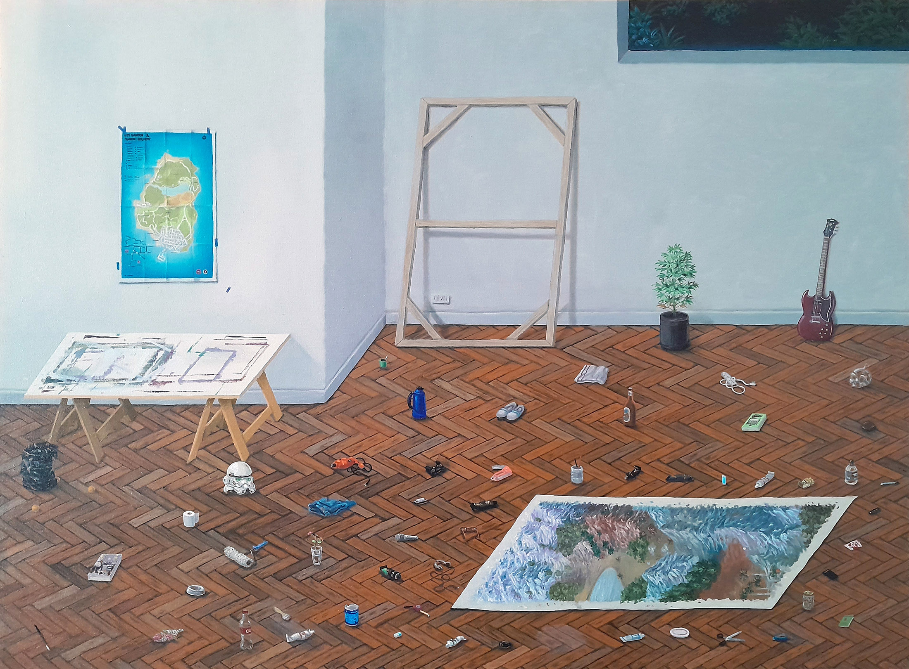
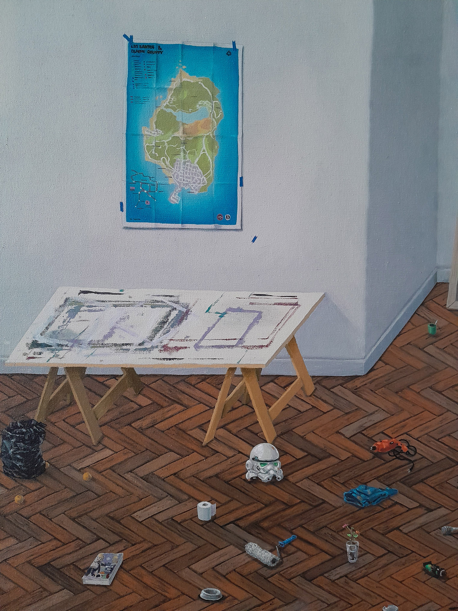
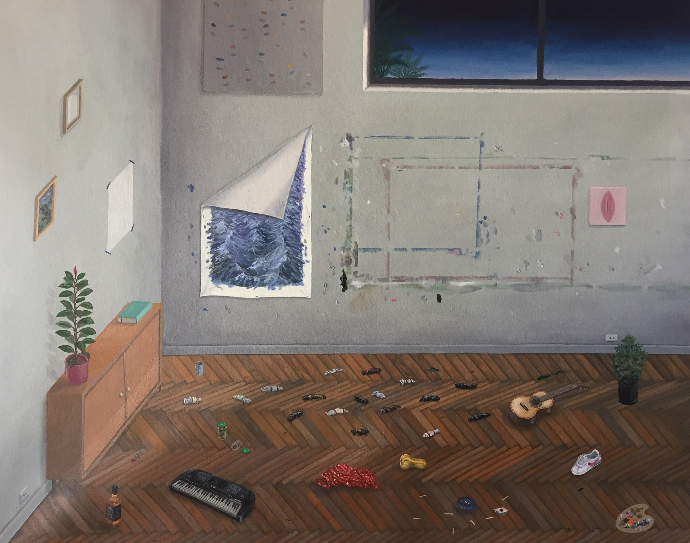
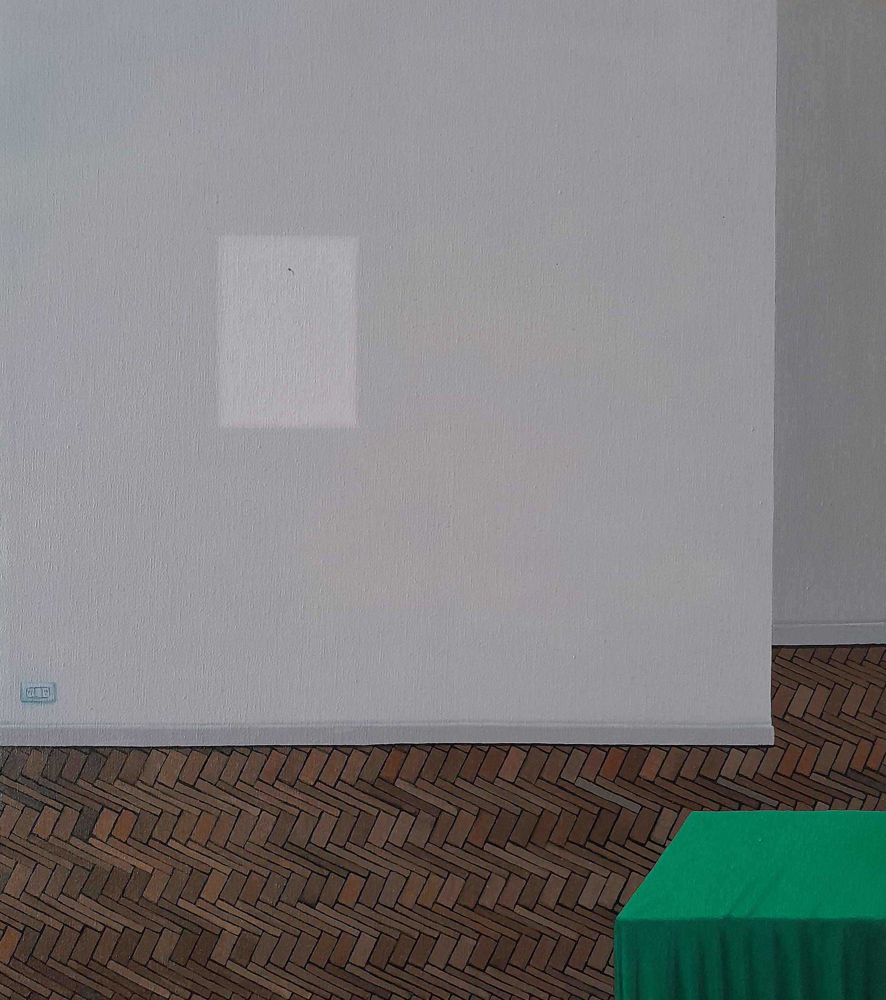
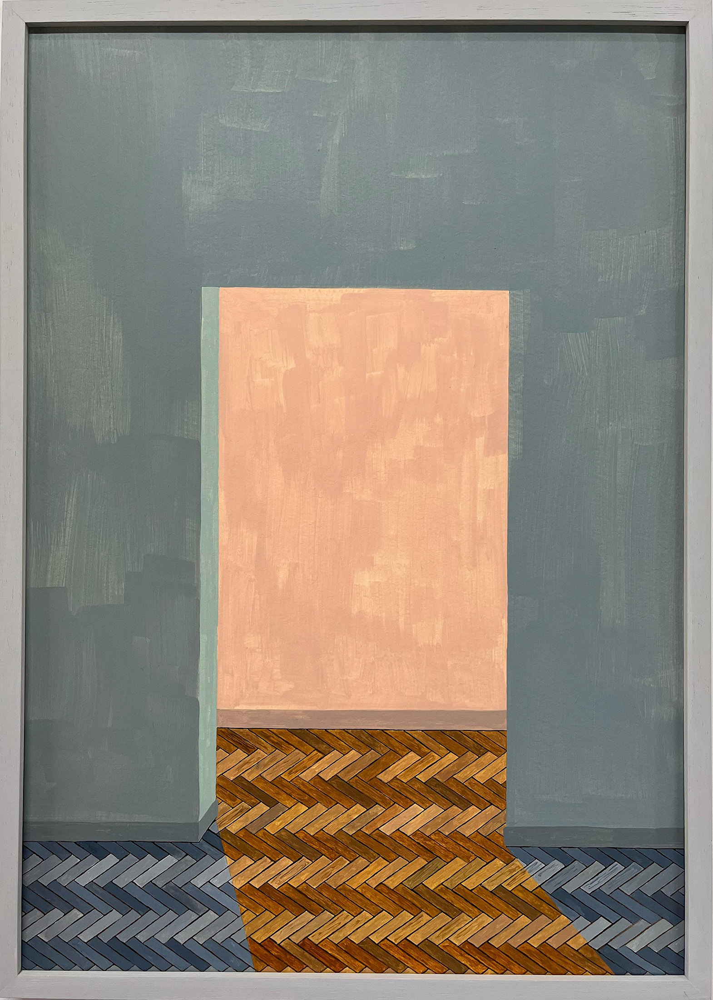
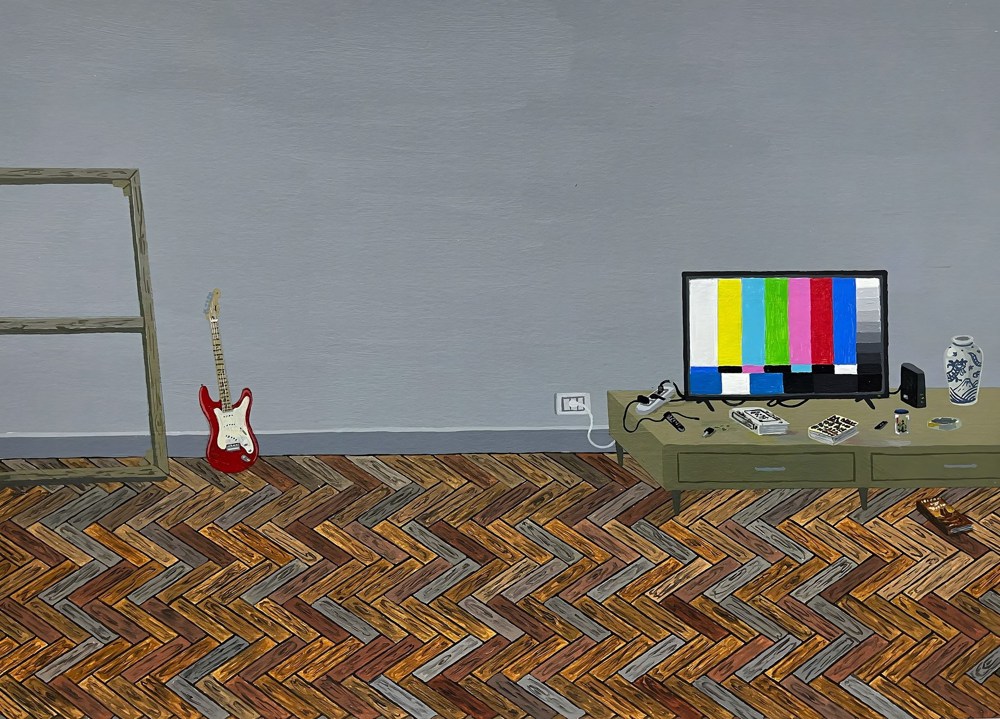
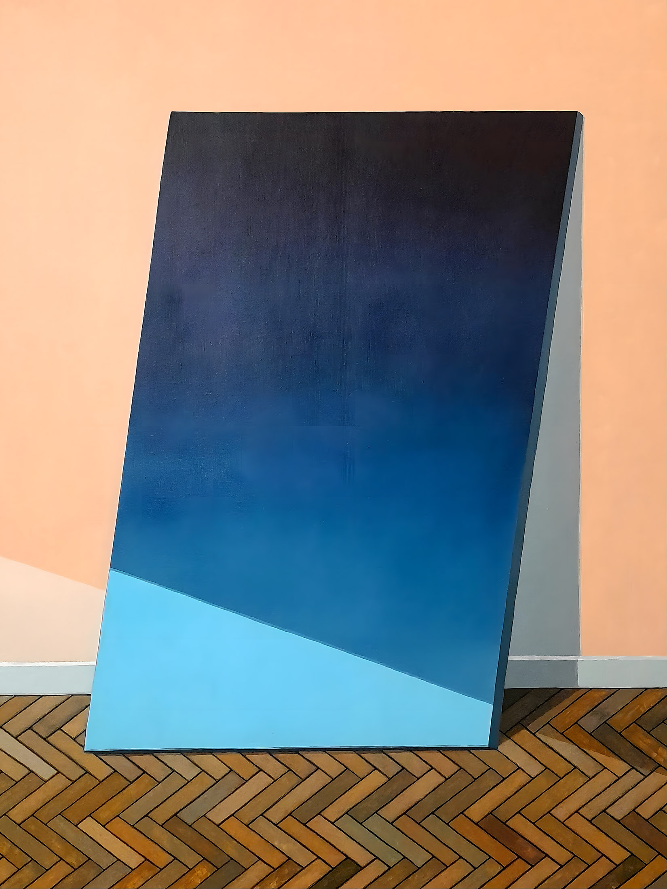
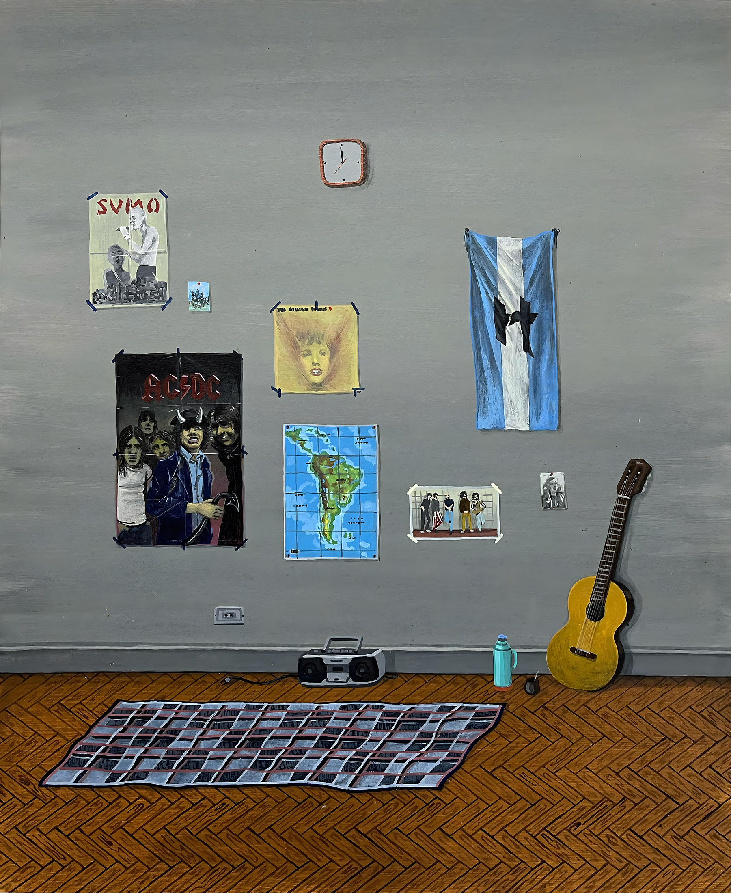
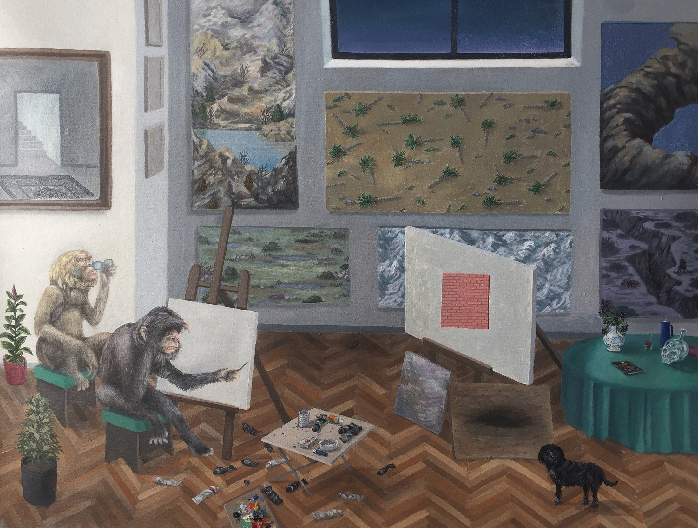
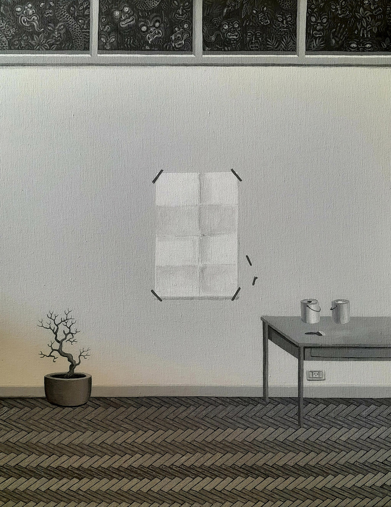

Interiores
Interiores es una serie centrada en la representación de espacios de trabajo y ámbitos domésticos que funcionan simultáneamente como escenas narrativas y como estructuras reflexivas. Talleres, habitaciones y ambientes cerrados aparecen como lugares donde la pintura se piensa a sí misma: el cuadro dentro del cuadro, los objetos del hacer, la repetición de motivos y la suspensión de una temporalidad precisa. Más que describir un espacio habitable, estas imágenes construyen un interior mental, donde el acto de pintar y sus condiciones materiales se vuelven el verdadero tema.









